Mist是什么
Mist
模仿
优势与实例
更有效 close
以最典型的两个应用：LoRA和SDEdit为例，Mist添加的水印均对生成结果形成了极大干扰。
LoRA
原始图像
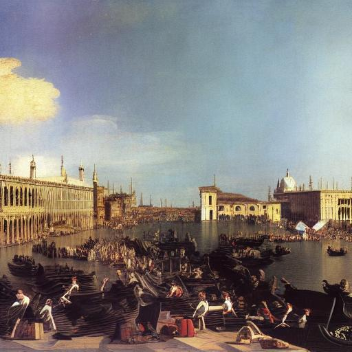
原始图像对应的生成图
Mist处理后的图像
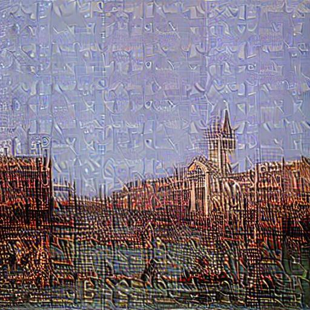
Mist处理后图像的生成图
SDEdit
原始图像
原始图像对应的生成图
Mist处理后的图像
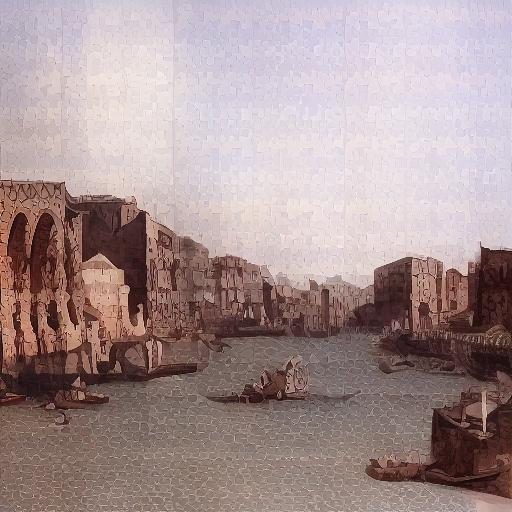
Mist处理后图像的生成图
更具鲁棒性 close
LoRA
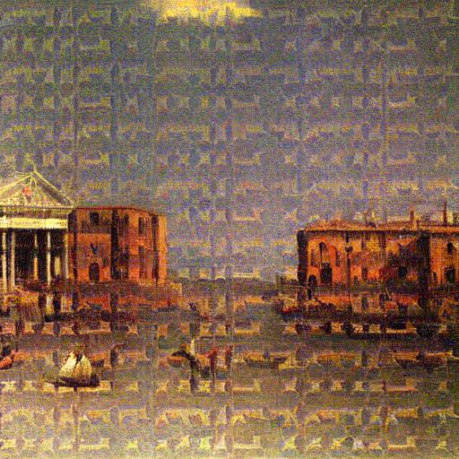
Mist应对高斯噪声下的生成图
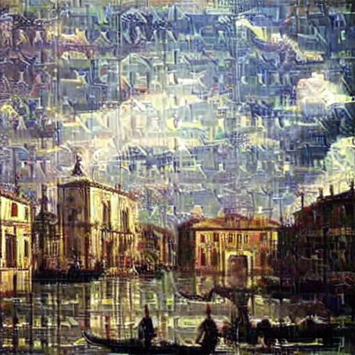
Mist应对JPEG压缩下的生成图

Mist应对截图和拉伸下的生成图

Mist应对超分下的生成图
SDEdit
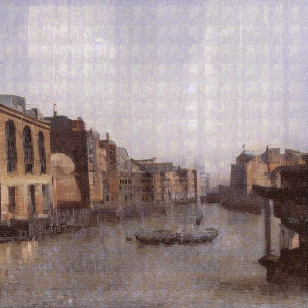
Mist应对高斯噪声下的生成图
Mist应对JPEG压缩下的生成图
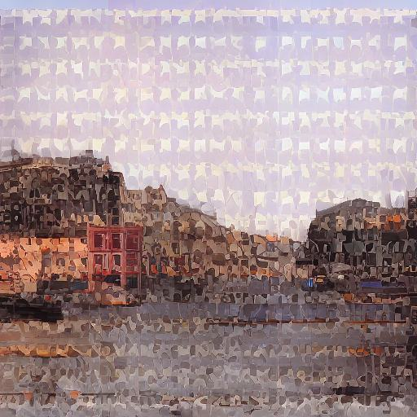
Mist应对截图和拉伸下的生成图
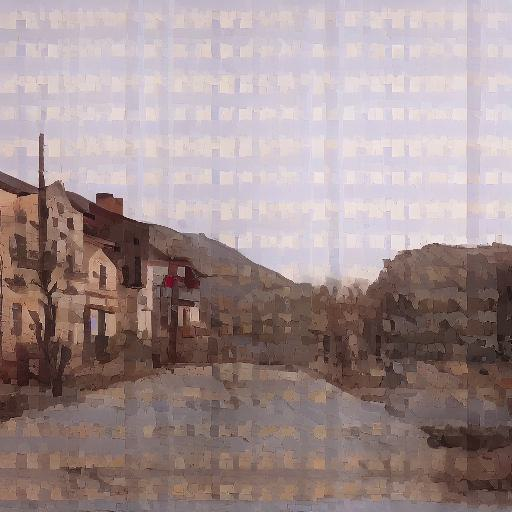
Mist应对超分下的生成图
计算资源开销 close
用户实例 close
@桑德兰的等待
原始图像
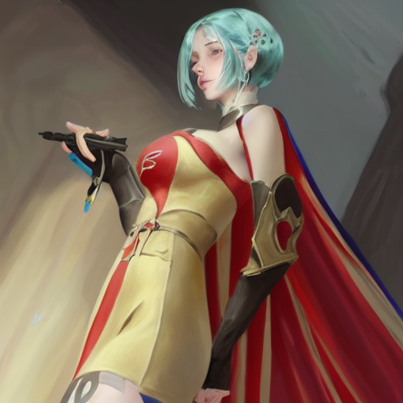
原始图像对应的生成图
Mist处理后的图像
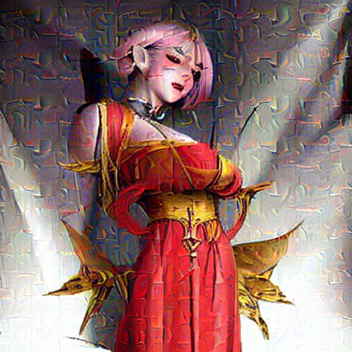
Mist处理后图像的生成图

原始图像
原始图像对应的生成图

Mist处理后的图像
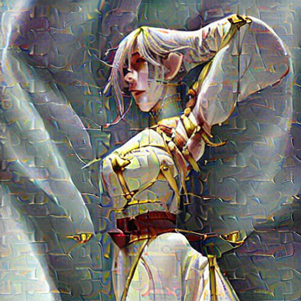
Mist处理后图像的生成图
@匿名画师
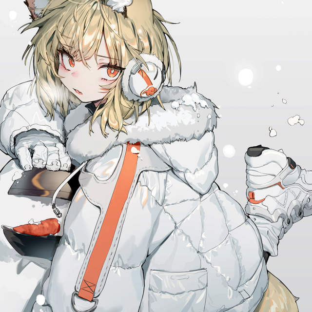
原始图像
原始图像对应的生成图
Mist处理后的图像
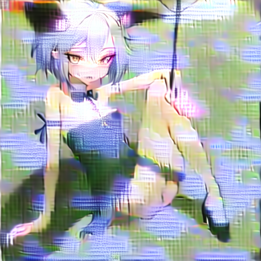
Mist处理后图像的生成图
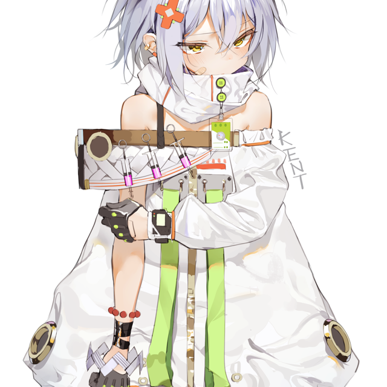
原始图像
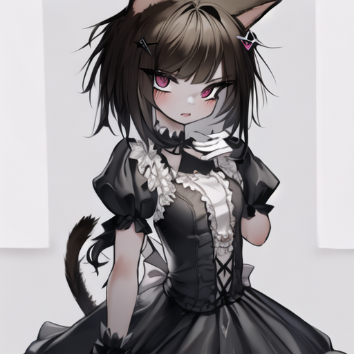
原始图像对应的生成图
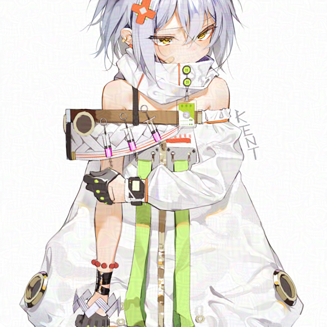
Mist处理后的图像
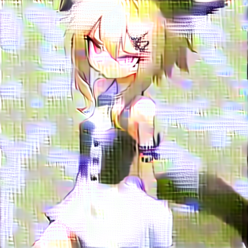
Mist处理后图像的生成图
下载
我们的愿景
毫无疑问，AIGC应用程序将为全人类的生产和消费方式带来革新。然而，其对既有社会格局及利益分配模式的冲击同样不可忽视。
我们认为，技术的革新与相应社会制度的完善同等重要。新制度的建立往往需要时间，但对相关问题的关注和思考应当具有前瞻性。Mist及我们未来的项目均旨在以技术方式进行一种社会实践，探索使相关技术以更加可持续、更加温和的方式融入社会的可能。以Mist为例，我们希望借此契机引发人们关注AI-for-Art应用程序对既有版权制度带来的挑战，对艺术家群体在商业和美学层面的价值的影响，以及本质上，我们如何看待和激励人类的创造力等问题。
我们相信，水印工具只是AIGC版权问题解决方案的一环。而AIGC相关技术引发的担忧与变化也不仅仅局限于版权领域。只有以此为起点，开放性地吸引更多技术工作者（尤其是可信AI相关领域的研究者）、人文社科研究者及行业实践者关注AIGC的版权及其他道德、合规及监管方面的问题，在此基础上逐步形成新的行业与社会共识，相关问题才能更好得到解决。
未来，我们希望成为新一代AIGC可信和道德问题的信息中转站。我们热烈欢迎所有对这一愿景感兴趣的开发者、研究者和从业者与我们联系，期待与您共同针对当前技术的瓶颈和尚未解决的潜在社会问题进行探索。
常见问题解答 close
我们也非常欢迎您通过社交媒体向我们表达关注、赞美和支持。除发布更多与AIGC可信有关的技术项目外，我们还计划于未来通过自媒体对AIGC的技术原理、商业实践和潜在的社会问题等议题进行介绍与科普，希望通过信息传递促进对AIGC及相关技术的更全面、深入的理解。关注我们，一同应对技术变革的浪潮！
联系我们
Psyker Group的团队成员：
梁楚盟，吴晓宇，薛伊铭和Melo Yang。
Mist核心开发人员：
Psyker Group，郑博阳，Alice2O3，MOSS星辉。
加州大学伯克利分校的苏勇文对Mist的开发有重要贡献。我们也感谢吴嘉豪和赵毅在软件开发上给我们的建议，以及苹果，GUUUU，原野，蚕蛹子，BASS对我们项目的支持。
此外，您还可以通过QQ群（189980587） 或者电子邮件与我们联系：mist202304@gmail.com。
您也可以关注我们的微博：@Psyker_，我们会在这里更新最新的资讯。